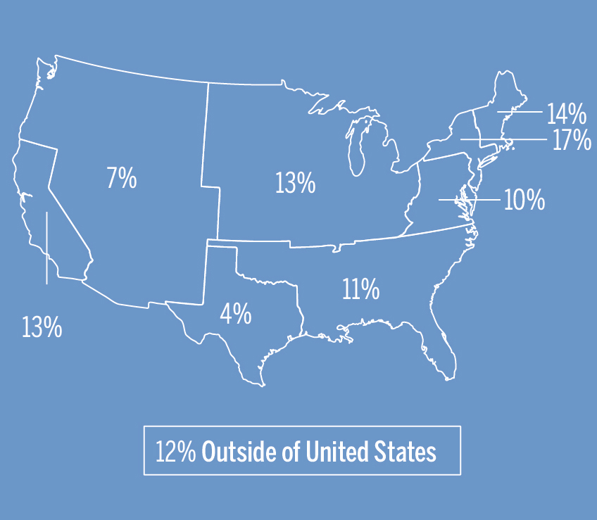
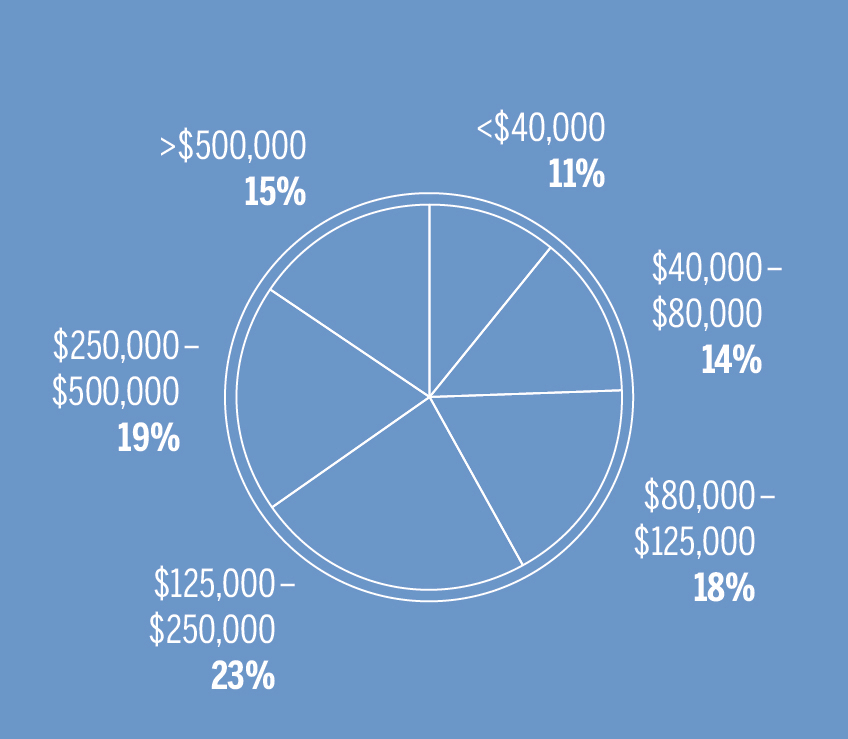
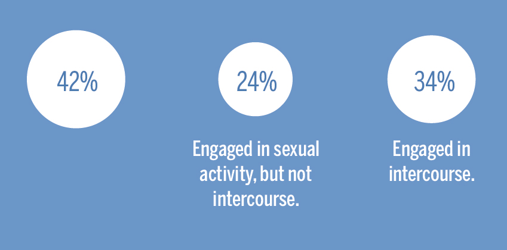
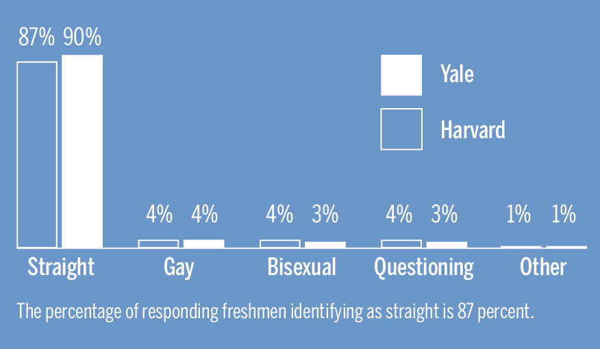
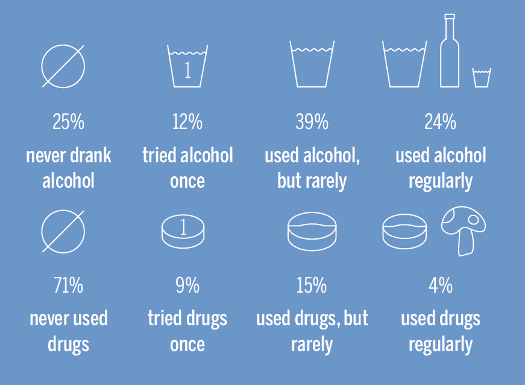
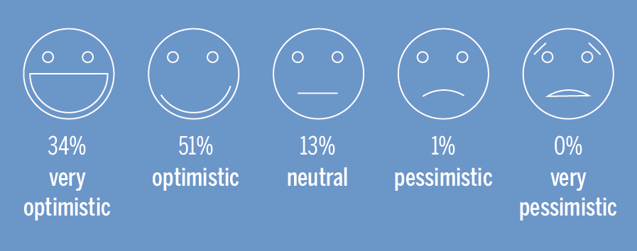

T
he 506 American students interviewed yielded a regional distribution consistent with those of previous classes. 34.3 percent said they were from either the Tri–State Area or greater New England, while 15.2 percent said they were from California. Including the survey's 68 international students, more than 6 out of 10 freshmen reported being from suburban communities.
Almost 90 percent of student respondents said they lived with two parents at home. The highest educational level attained by either parent skewed toward the high end of the spectrum, with 71 percent earning at least a Master's, professional or doctorate degree. Forty-six freshmen said that no parent had gone beyond graduating high school. Much like family education level, family income levels were generally high for the class of 2018: 314 of the 582 respondents reported an annual household income of more than $125,000, 83 of which eclipsed $500,000 per year.
Still, 25 percent of those surveyed indicated that they were in the bottom two income brackets, earning $80,000 annually or below. Within those brackets, however, 85 percent said they were happy with their financial aid awards, compared to the overall 58 percent who said the same.


According to results from a similar freshman class survey conducted by the Harvard Crimson for Harvard freshman, Yale’s class of 2018 mirrored Harvard’s with both yielding similarly distributed income levels and ethnicities. At 58 percent, Harvard did have a larger contingent of public school students compared with Yale’s 55 percent. However, Harvard demonstrated a higher proportion of legacies with 73 percent of Harvard freshman reporting no prior family connection to the university compared with 78 percent at Yale.
IDENTITY
In religious beliefs, the Class of 2018 displays immense diversity, with no religion exceeding 18 percent of the class. Protestants, Catholics, atheists, agnostics and Jews made up the lion’s share of the class, with each accounting for between 13 and 18 percent.
True to the adage that college students skew liberal, more than six-tenths of the 569 respondents characterized themselves as either “somewhat” or “very” liberal, while only 14 percent self-identified as “somewhat” or “very” conservative.
HIGH SCHOOL
Before Yale, slightly more than half of those surveyed attended a public high school, with the remainder generally attending private schools. Of those attending private schools, 3 out of 5 paid a tuition of more than $20,000 every year.
71 percent said that they enjoyed at least an above–average high school experience, while only 2 percent said that they did not enjoy theirs.
ACADEMICS
Slightly more than half of everyone surveyed said that they felt academically prepared for Yale. However, only 49 percent of those coming from public schools reported such confidence, compared to the 66 percent of their private school counterparts.
Of the 563 respondents, 220 indicated that they plan to major in a STEM subject — the department was the most popular for all ethnicities, except for Hispanics, who showed a preference for the social sciences. Fifty-one percent of east Asians and 65 percent of Indians chose the STEM option. One out of three black students said that they wanted to study social sciences, giving them the highest percentage of prospective students in the department of any ethnicity. At Harvard however, the social sciences won out with Economics and Government capturing the most prospective students at 16 percent and 11 percent respectively.
SEX
Survey results suggest nearly half of incoming freshmen are virgins as more than four out of every 10 respondents had never engaged in any sexual activity. Thirty–four percent arrived at Yale having already had intercourse and the remainder had engaged in some form of sexual activity though not necessarily intercourse.

Thirty–five percent of those surveyed said they have never been in a relationship. On the flip side, seventeen percent of the respondents had been in three or more relationships before coming to Yale. Twenty–seven percent and 21 percent, respectively, have had one or two relationships. In the free response section, some respondents wrote that they hoped to have lots of sex, while others said they aimed to go through Yale without having any sex.
The percentage of responding freshmen identifying as straight is 87 percent.

SOCIAL LIFE
Roughly eighty percent of responding Yale freshmen said that classes would be more important to them than their social lives, compared to 86 percent of Crimson freshmen. Among Yale students, none said that social life is entirely more important.
Few students surveyed indicated an interest in participating in Greek life at Yale. Less than one–fifth — 18 percent — of those who responded said they planned to join a fraternity or sorority while at Yale.

The proportion of students who had never used alcohol was roughly equivalent to the proportion that had used alcohol regularly, both making up around a quarter of respondents. On the other hand, most of those surveyed – 72% – had never used drugs before.

CAREER
Despite 2018's expressed preference for the STEM departments, only 15 percent reported plans to pursue a career in medicine after Yale. In comparison, 1 in 5 freshmen are set on a career in law, public service or politics. Finance and consulting ( 8 percent) and academia ( 7 percent) rounded out the top four categories. Though medicine and public service also took top spots in the Crimson's poll, entrepreneurship and technology/engineering beat out finance, consulting and academia.
Varsity athletes, who made up 14 percent of the surveyed Yale audience, favored finance more than their non-athlete peers did: 11 percent of the former, versus less than 5 percent of the latter, said that they plan to pursue a career in banking or alternative investing.
Those aspiring to work in medicine or public service/law/politics were more than twice as likely to strongly emphasize their studies than those planning to work in finance (36, 34 and 15 percent, respectively). Half of those aspiring to work in finance said that they were “very optimistic” about their long-term futures, while only 42 percent and 35 percent said the same after choosing medicine or law, public service or politics, respectively.

OUTLOOK
Regardless of their background, freshmen were overwhelmingly optimistic about their futures. Eighty–five percent felt “optimistic” or “very optimistic” about their prospects. No freshman who responded to the survey reported feeling “very pessimistic” about their future.
